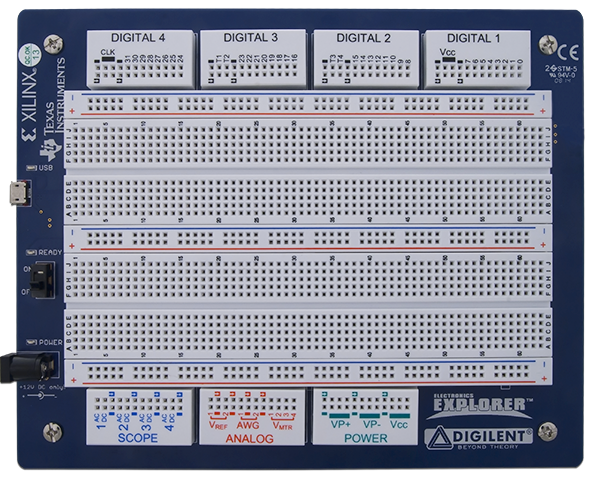
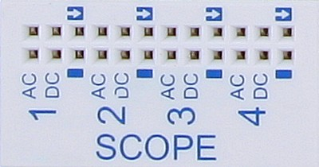
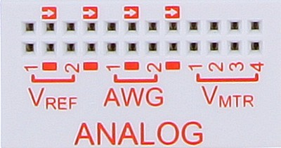
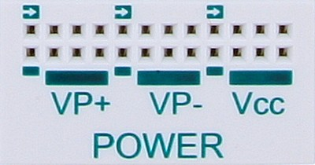
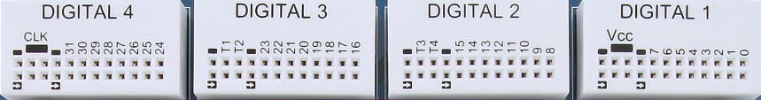

Getting started with the Electronics Explorer Board
1. Hardware
To set up the board:
- First install the Digilent WaveForms software on your PC. See Installer Details for more information.
- Connect a 12V 60W power supply to the Electronics Explorer board.
- Connect the board to your PC using a USB cable.
- The Ready LED will light when the Output Enable switch is ON and the WaveForms application is connected to the board.
All of the components of the board work relative to the common ground. None of the instruments have a floating ground.

For more information visit the reference page.
2. WaveForms Software
See Installer Details for information on installing WaveForms.
See WaveForms for information on using the
software.
3. Troubleshooting
In case you receive the “Communication with device failed” error message:
- Remove all of the attached components and wires from the device.
- Verify that the USB cable is attached correctly, reconnect it.
- Verify that the power supply is 12V at least 60W.
- Connect with WaveForms to the device.
The board switch in the OFF position disables all of the outputs. In this case, an “OFF” text is shown in the main window status bar and in the main plot of instruments.
4. Oscilloscope
The Oscilloscope has four channels with AC and DC input.
Specifications:
- The input bandwidth is 100 MHz and the ADC frequency is 40 MSps.
- The DC inputs have an impedance of 9.3 MOhms in parallel with 10 pF.
- The AC inputs have 100 nF filter capacitor.
- The input voltage is from -20 V to 20 V.
- The ADC is 40 MHz, 10 bits, with adjustable resolution from 800 uV to 40 mV.
- The offset is adjustable from -20 V to 20 V.
- The maximum input voltage is 200 V.
- The buffer can be up to 16 KiS (default is 8KiS) on four channels.

5. Arbitrary Waveform Generator
The Electronics Explorer board is equipped with two Waveform Generators.
Specifications:
- The output current is 25 mA.
- The DAC is 14 bits and 40 MSps.
- The output 20Vp-p, 1.2 mV resolution.
- The output bandwidth is 20 MHz.
- When a channel is closed, the output is not in high impedance but should be close to zero volts. Verify the voltage on the Waveform Generator channels before connecting it to a circuit.
- The carrier buffer can be up to 32 KiS (default is 8KiS) or 16KiS carrier and 16KiS modulation buffer on two channels.
- The positive and negative power supplies can be used as slow voltage or current basic waveform generators.

6. Power Supplies and Voltmeters
The board has four voltmeters, two reference voltages, one positive, one negative, and one 3.3/5V supply.
Specifications:
- The fixed power supply 3.3/5 V can provide up to 2 A.
- The positive power supply has a range of 0 to 9 V and 0 to 1.5 A current limit.
- The negative power supply has a range of 0 to -9 V and 0 to -1.5 A current limit.
- The reference voltage supplies can provide only limited current, up to 10 mA.
- The disabled reference voltage output is not in high impedance but should be close to zero volts.

7. Digital I/O
The Electronic Explorer board has 32 digital I/O (DIO 0-31) and 4 trigger I/O pins.
Specifications:
- The digital pins are supplied at 3.3 V.
- They have a 16 mA drive strength.
- They have a 220 Ohm series PTCs.
- They can output push-pull (PP), open-drain (OD), open-source (OS), and three-state (TS) signals. For OD and OS signals, use external pull-up or pull-down resistors.
- The generator/analyzer frequency is 100 MHz.
- The analyzer can work on an external clock, up to 100 MHz.
- The Logic Analyzer buffer can be up to 16 KiS (default is 4 KiS).
- The Pattern Generator custom buffer can be up to 16 KiS (default is 1 KiS).
